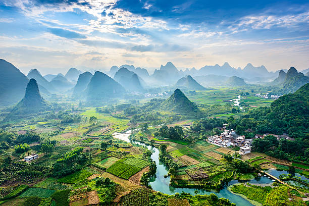
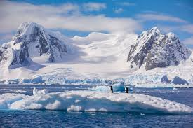
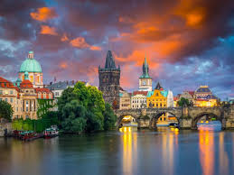
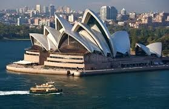

- Asia is the largest continent, covering about 30% of Earth's land area and home to more than 4.7 billion people
- It includes 49 countries and stretches from the Arctic in the north to the Indian Ocean in the south, bordered by the Pacific and Arctic Oceans
- Asia has extreme landforms, such as Mount Everest (world's highest peak) and the Dead Sea (lowest land point)
- The continent is known for its diverse climates and landscapes, from deserts like the Gobi to tropical forests and tundra
- Asia is rich in cultures and ethnic groups, with thousands of languages and major world religions originating herer
Asia

- Africa is the second largest continent in the world, covering about 20% of Earth's land area
- It is made up of 54 countries and is home to over 1.3 billion people, with a very young population
- The Sahara Desert (largest hot desert) and the Nile River (longest river) are found in Africa
- Africa is rich in natural resources and wildlife, and is known as the "cradle of humankind" because early humans originated there
- Over 2,000 languages are spoken across Africa, showing its great cultural and ethnic diversity
Africa

- Over 2,000 languages are spoken across Africa, showing its great cultural and ethnic diversity
- It includes 23 countries and territories, with the largest by area being Canada and the largest by population the United States
- The continent stretches from the Arctic Circle to near the Equator, with landscapes including mountains (like the Rockies), plains, forests, deserts, and tundra
- Mount Denali in Alaska is North America's highest point, and the Missouri River is its longest river
- North America is bordered by the Arctic Ocean (north), Atlantic Ocean (east), Pacific Ocean (west), and is connected to South America by the Isthmus of Panama
North America

- South America is the fourth largest continent, spanning about 17.8 million square kilometers (6.9 million square miles)
- It is home to approximately 438 million people as of 2025, with Brazil being the most populous country
- The continent consists of 12 independent countries and several territories, featuring great cultural and ecological diversity
- Key geographic features include the Amazon Rainforest (world’s largest rainforest) and the Andes Mountains (longest continental mountain range
- South America stretches from the Caribbean Sea in the north to Cape Horn at its southern tip
South America

- Antarctica is the fifth largest continent, covering about 14 million square kilometers (5.5 million square miles)
- It has no permanent or indigenous population; only scientists and support staff live there temporarily at research stations
- The population varies seasonally: about 4,000–5,000 people in summer and around 1,000 in winter
- Antarctica’s harsh climate means it is covered mostly by ice, with no cities or regular settlements, just research bases
- The continent is home to unique wildlife like penguins and seals and is protected by an international treaty that bans military activity and encourages scientific research
Antarctica

- Europe is the second smallest continent by area but the third most populous, with around 744 million people in 2025—about 9% of the world's population
- It is located mostly in the Northern Hemisphere and bordered by Asia, the Atlantic Ocean, the Arctic Ocean, and the Mediterranean Sea
- Europe has a high population density and is known for its many countries, with Russia being the largest and Germany the most populous in Central Europe
- The continent experiences declining population growth and an aging population, trends common in many developed regions
- Europe is celebrated for its rich cultural, historical, and linguistic diversity, with landmarks, traditions, and cities central to world heritage
Europe

- Australia is the only country that is also a continent, covering about 7.7 million square kilometers, making it the sixth-largest country in the world
- Its population is nearly 28 million as of July 2025, mostly living in major cities along the eastern and southern coasts
- Australia is known for being highly urbanized and one of the most sparsely populated countries due to its large desert interior
- The country features diverse landscapes, including deserts, tropical rainforests, and a long coastline
- It has a unique history, with Aboriginal Australians as its original inhabitants and a culture shaped by immigration and British colonization